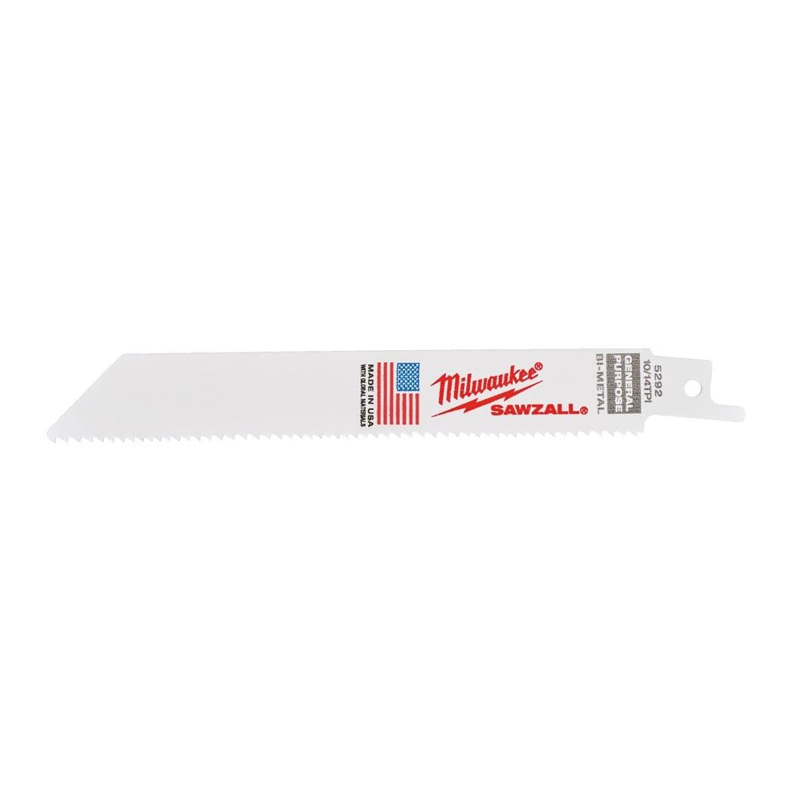

48005292

| Blade length (mm) | 150 |
| Material type | Bi-Met,Co |
| Max. cutting capacity aluminium (mm) | 3 - 10 |
| Max. cutting capacity non-ferrous metals (mm) | 3 - 11 |
| Max. cutting capacity plastic pipes (mm) | ⌀ 3 - 100 |
| Max. cutting capacity PVC (mm) | 10 - 50 |
| Max. cutting capacity sandwich material (mm) | 5 - 100 |
| Max. cutting capacity steel (mm) | 3 - 11 |
| Max. cutting capacity wood with nails (mm) | 5 - 100 |
| Pack quantity | 50 |
| Palette | No |
| Ref. No. | S922VF |